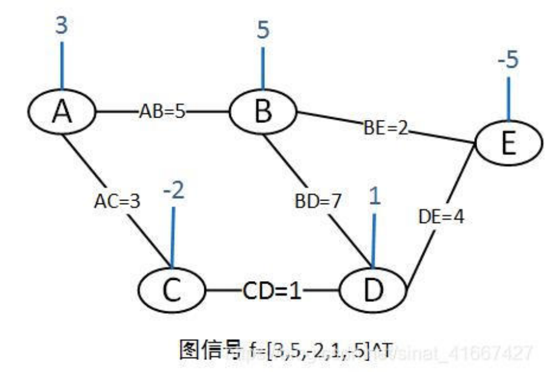
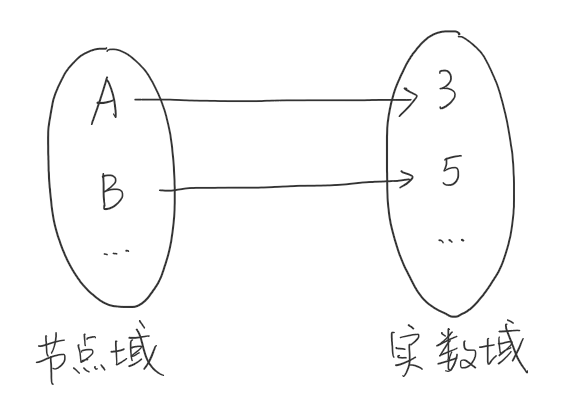
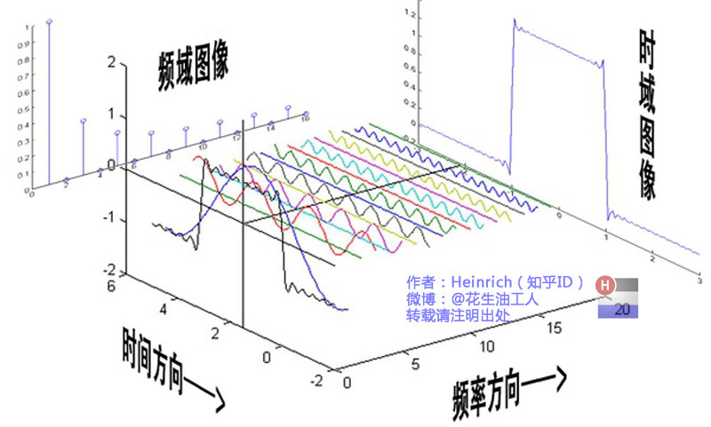

终于把GCN看懂了，没想到这么简洁的公式里竟然全是数学推导，GCN的作者太会想了。
我也能看懂的GCN
图信号
图信号处理是离散信号处理在图信号领域的应用。
一个单通道图信号f=[3,5,-2,1,-5]^T的例子：

图信号向量依托于图，其中为节点集合，为边集合，为图的邻接矩阵。
\begin{equation*} W=\left[ \begin{matrix} 0 & 5 & 3 & 0& 0\\ 5 & 0 & 0 & 7 & 2\\ 3 & 0 & 0 & 1 & 0\\ 0 & 7 & 1 & 0 & 4\\ 0 & 2 & 0 & 4 & 0\\ \end{matrix} \right] \end{equation*}
图信号也可以看做是图函数。例如在上面的例子中，可以看做是节点域向实数域的映射，即每一个节点对应一个实数值。

上面的例子的图信号只有一个通道。在多属性的图中，图信号的通道不只有一个。对于多通道的图信号表示如下：
其中，为图节点数，为每个节点的信号通道数。图信号矩阵的每一行表示一个节点上的信号。
傅里叶变换
曾经，我在信号与系统课上与傅里叶变换邂逅，现在却仿佛初见。
傅里叶曾经说过：“任何波形都能用不同频率的正弦波叠加起来得到。”（并没有说过）
傅里叶变换的本质是把任意一个函数表示成若干个正交基函数的线性组合。在信号分析中，通常用于信号时域与频域的转换。
最经典的傅里叶变换图：
